The website is a single page that is build dynamically using wordpress plugin development best practices.
With a single plugin that have 5 diffrent features that could be easily re-used many times in a same logical pattern
Examples:
Feature 1: Who we are:have 2 diffrent settings:
1- one with share on facebook button
2- one with no share on facebook button
This feature widget is related to a page content type and not post content type.
usually anything is static or single such about us, who we are, our mission our vision that is kind of a single content that don't update usually (like news or articles) are located on the page section (page content type).
How modify the who we are
Simple go to the page section. 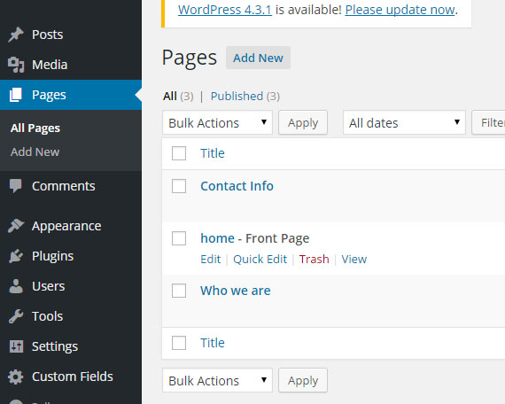 you will find who we are page title that you can simply click to modify the content. while modifying the content you should be aware of the text editor that have 2 types of display
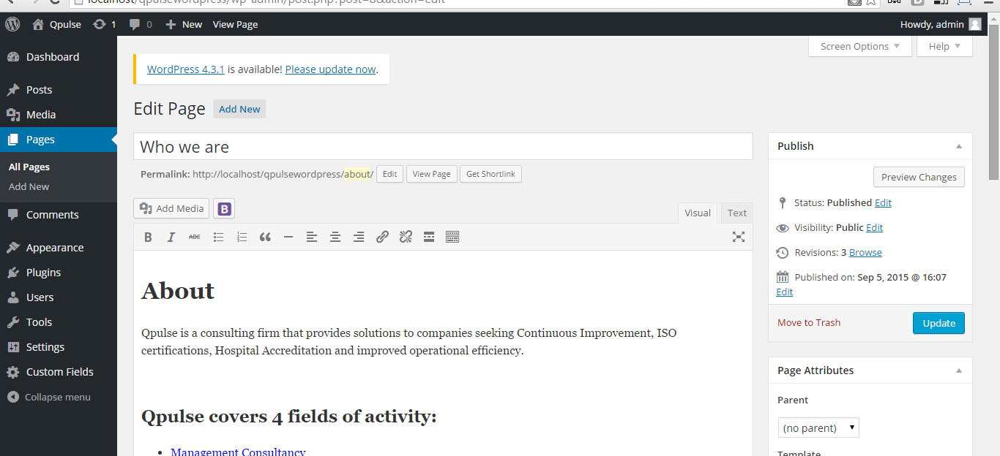 Visual and Code. The visual can allow you to easily modify manually the content.
In case you want to paste content from word. Do note copy paste imediatally to the text editor in this case you will lose the formats that was developed to be design consistent. you should open the code mode editor and replace the copy paste segment by segment between the html code.
you can always change the background image of this feature by setting the feature image. 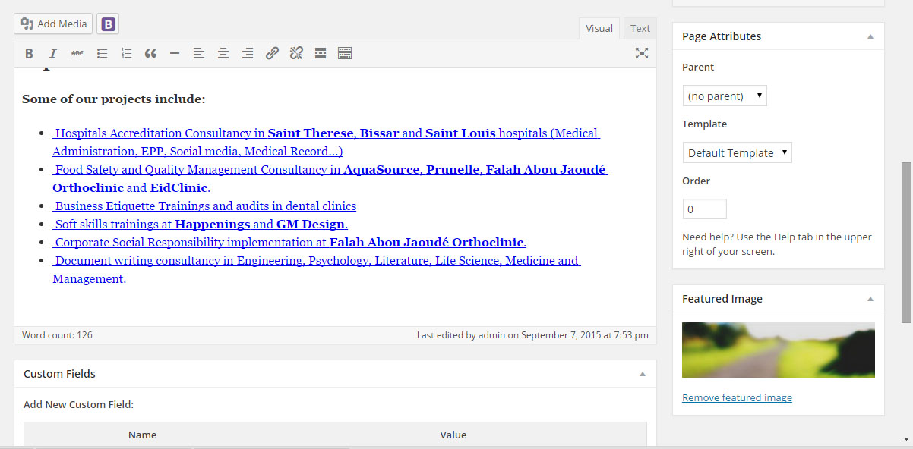
How add a new who we are
Simple go to the page section.
You need to create a new page and you can name it what ever you want such:
mission and vision as example.
once set the feature image and the content of the page (publish) the new page.
Now go to the widget in the Appearance section.
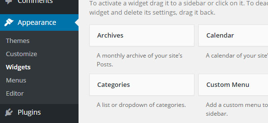
add a new pro-freelancer widget to the qpulse side bar.
you will see the following:
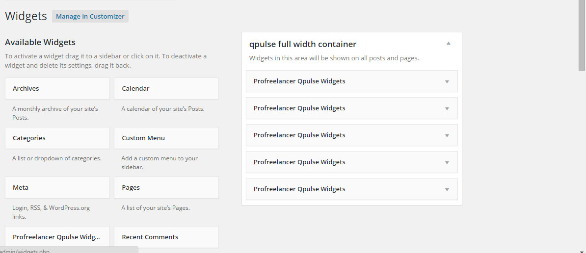
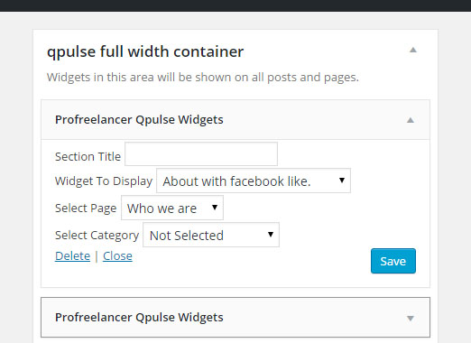
Section Title: you put the name to understand what widget it is or to display the section title depend on the concept of the feature you choose.
example the first featutre don't use this title, instead it will use the page title. some other widget features are not the same case.
Widget to display: This you will choose the available features that comes with Qpulse plugin. In our case we need the who we are with no facebook buttons. cause it is not allowed to add many facebook buttons in same landing page or you will end up with javascript errors.
Since this feature is a page content type related, you need to choose the page you want to assign to it. In case it was post content type related you will assigne the category page.
Now the new page that you already created previously should be in the list. Once done. Save. and you will find this feature added on the front end.
3 diffrent features as post content types
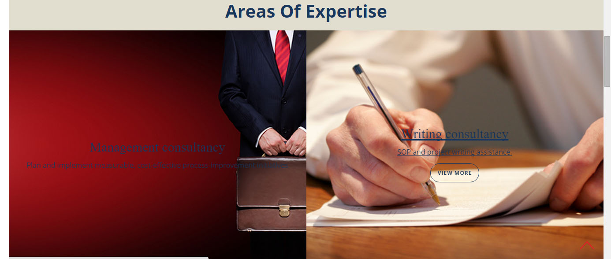
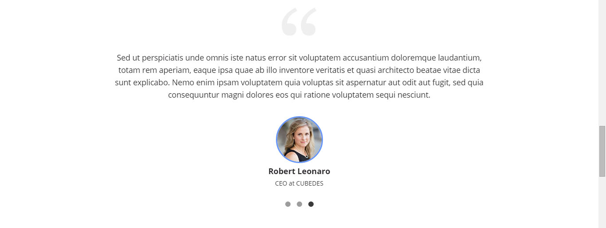
These features are related to Post categories, to add or modify any content related to these features. you simply go to post section.
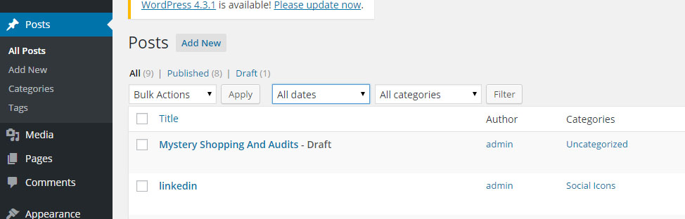
You can go to categories so you can see a more clear
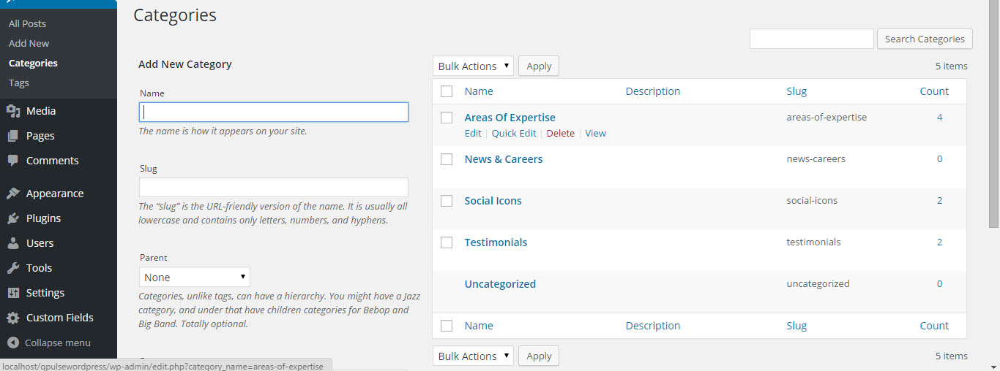
you should choose the number at the right related to the category you want to modify the content for.
example social icons, etc.
you will find the records, so you can add or edit same concept mentioned above about the texteditor visual or text view mode ,and do not copy and paste from word.
In case you want to add more widgets related to these features, you can always repeat the steps above by going to appearance widget section, and add pro-freelancer widget to qpulse sidebar. and fill the blanks making sure that you are choosing the category instead of the page since it is a post type content type features and not page content type related.
PS: be aware to add new social icons, you need to google for the font awsome icon such skype.
Also be aware while creating a new post content type that is related to a category to always choose the category in case it is a new record , in case you didn't it won't apear to the front end
it will be fa-skype. just copy skype with no fa- and put it as a title, then put the link url on the texteditor. in this way a new icon will apear beside facebook and linkedin.
Contact us Form
This form is unique, you don't have to add content to it, just simply set from the settings the email address that you want to receive your email to
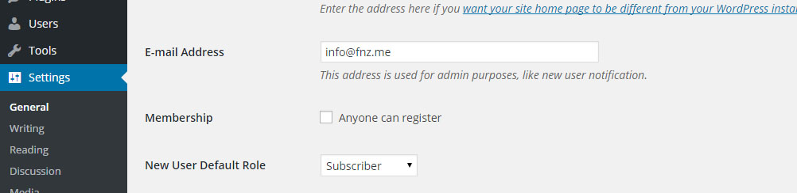